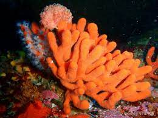
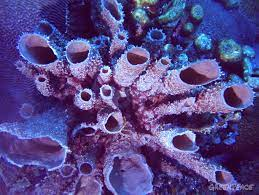
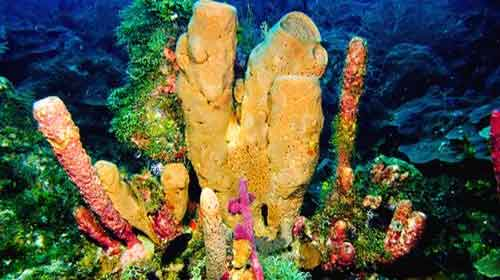
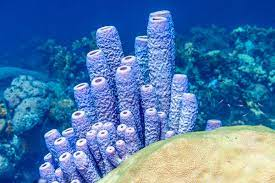
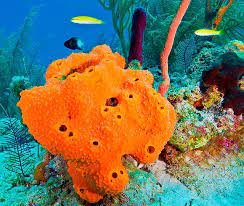
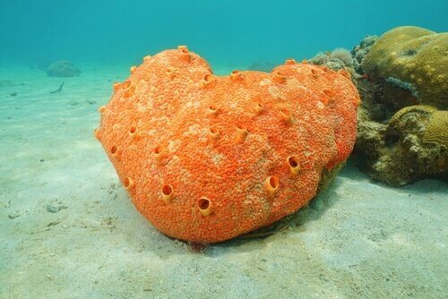
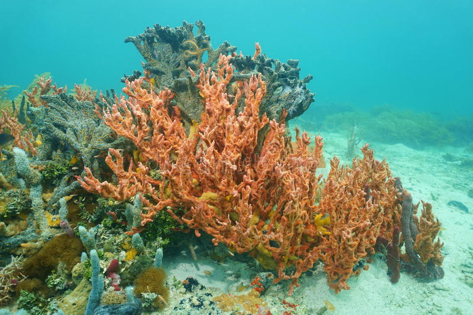
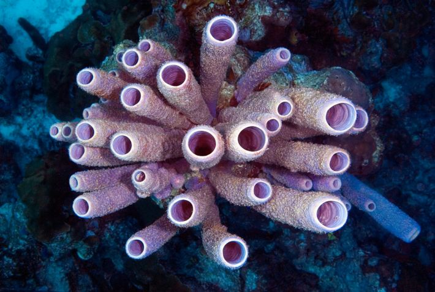
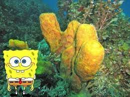

|

Adaptações para o ambiente aquático:Informações sobre suas adaptações para o meio aquatico |

|

|
|

Regulação de água no corpo:Informações sobre a regulação de água no corpo e respirção das esponjas do mar |

|

|
|

Informações sobre seu organismoInformações sobre: Sistema respiratório, Sistema circulatório, Sistema nervoso |

|

|
Reino: Animalia |
Filo: Porifera |
Classes: Calcarea, Demospongiaee Hexactinellida |
Simetria: Radiada |
Família: Porifera |
Gênero: Esponjas |
Os poríferos são animais filtradores. Eles promovem uma corrente de água que entra pelos poros, passa pelo átrio e sai pelo ósculo. Ao entrar, a água fornece oxigênio e ao sair, carrega dióxido de carbono e resíduos. Assim, ocorre a respiração, através das trocas gasosas por difusão.
Os poríferos não apresentam a capacidade de locomoverem-se.
Elas podem ter um escudo químico para defesa.
No desenho o Bob Esponja come hanburguers de siri, o que na vida real não acontece, mas a graça do desenho é que seu maior inimigo é na verdade o Plancton, bom...O proprio nome ja diz que animal ele é.